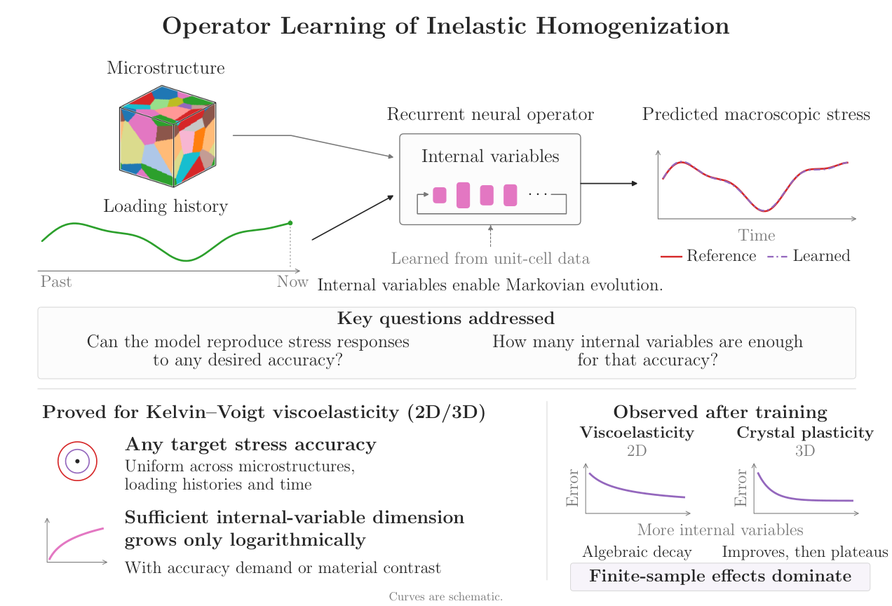
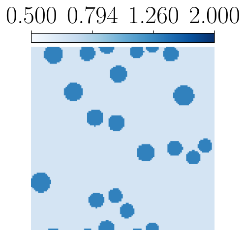
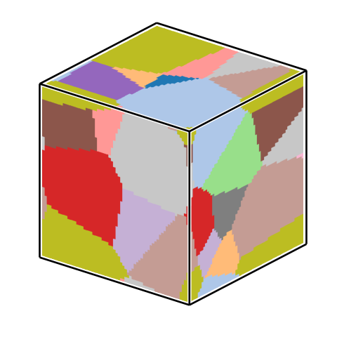

The universal approximation and internal-variable complexity theorems were formalized in Lean 4 with Mathlib, AI-assisted, and checked against separately specified statements with Lean Comparator.
Abstract
We study the learning of homogenized constitutive laws for inelastic heterogeneous materials, aiming to replace costly concurrent unit-cell simulations with surrogates that generalize across loading histories and microstructures. We focus on the recurrent neural operator framework, motivated by the explicit form of homogenized Kelvin–Voigt linear viscoelasticity. In this framework, internal variables enable a Markovian approximation of loading-history dependence, and neural operators represent the microstructure-dependent constitutive response. For periodic Kelvin–Voigt viscoelasticity, we prove a universal approximation theorem showing that the model can approximate the homogenized constitutive law to any prescribed accuracy, uniformly in time and over a wide set of admissible strain trajectories and microstructural property fields, in two and three dimensions. This comprises a significant extension of the existing, somewhat limited, one-dimensional theory that uses explicit solutions for piecewise constant materials. Instead, in two and three dimensions, we adopt a more versatile approximation based on the spectral representation of the memory kernel that arises from homogenization. This also enables us to give an explicit bound on the internal-variable dimension, sufficient for approximation, exhibiting logarithmic growth in the inverse relative stress error and in material contrast. Numerical experiments on viscoelasticity and crystal plasticity complement the theory, illustrating the roles of internal-variable dimension and sample complexity in learning homogenized responses from unit-cell data. Theoretical results are formally verified in Lean 4.
Problem
Concurrent unit-cell simulations for inelastic heterogeneous materials are costly. Learned surrogates for homogenized constitutive laws need to generalize across loading histories and microstructures and should come with approximation guarantees. Existing theory covers only one-dimensional, piecewise-constant cases.
Approach
Recurrent neural operator models are studied in which internal variables give a Markovian approximation of history dependence. The microstructure-dependent stress and kinetic responses are represented by neural operators. For periodic Kelvin–Voigt viscoelasticity, a spectral representation of the homogenized memory kernel yields a Prony-series internal-variable model, which is then combined with neural-operator approximation. The theoretical results were formalized in Lean 4 with Mathlib, with AI assistance, and the proofs were checked against separately specified theorem statements using Lean Comparator.

Figure 1 : Graphical abstract.
Results
A universal approximation theorem holds in 2D and 3D, uniformly in time, over admissible strain trajectories and microstructures. The sufficient internal-variable dimension grows logarithmically in the inverse relative stress error and in material contrast. Experiments on viscoelasticity and crystal plasticity illustrate how internal-variable dimension and sample size affect error, and show that models trained on Voronoi microstructures generalize to particulate microstructures.

Figure 7 : ( left ) A representative sample of the particulate microstructural property field. ( right ) Internal-variable complexity trend for models trained on Voronoi microstructures and evaluated on particulate microstructures. Markers show the mean; shaded bands show one standard deviation.

Figure D.1 : ( Top ) The test sample of the crystal plasticity dataset with a median relative stress prediction error (7.5%) for the learned model. ( Bottom left ) The stress-prediction components, where solid lines denote the reference homogenized response and dashed-dotted lines denote the stress response predicted by the learned model. ( Bottom right ) The components of the internal variable pr